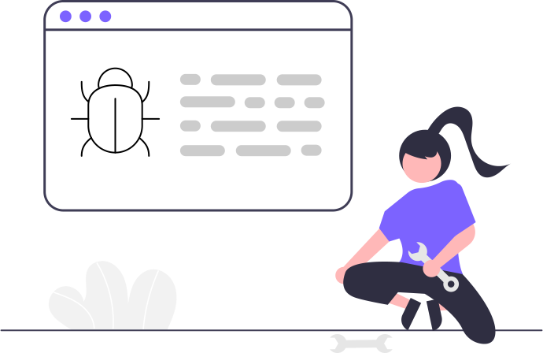

We dont want to show bullets in the unordered list.We'll remove that with CSS.
Item One
Item Two
Item Three
unorder inline list
Instead of going in a new row, we will create a list which will take columns
Inline Item One
Inline Item Two
Inline Item Three
reverse order list
counting of will go reverse for this list
milk
eggs
bread
@nav
@header

adarsh balika
the
web developer
@section
A section is used to separate parts of pages.
In marketing websites you would have seen a header followed
by sections of features,team,pricing,contact info etc.